Collector intelligence
The games worth owning—not just hoarding.
A research-backed guide to exceptional North American and English-friendly Japanese physical releases for Nintendo Switch, Switch 2, and PlayStation 5.
60curated physical games
13research-backed additions
3acquisition tiers
The standard
Rarity alone is not enough. A must-have needs lasting game quality, an attached collector audience, a meaningful physical edition, and a rational entry price.
40% · QualityApproximately 9/10 critical consensus, with rare cult exceptions.
25% · FollowingPersistent community interest rather than one viral post.
20% · Physical structureLimited distribution, complete media, or a meaningful regional edition.
15% · OpportunityRetail, sale, preorder, restock, or defensible sold-market entry.
Established grail
Patient target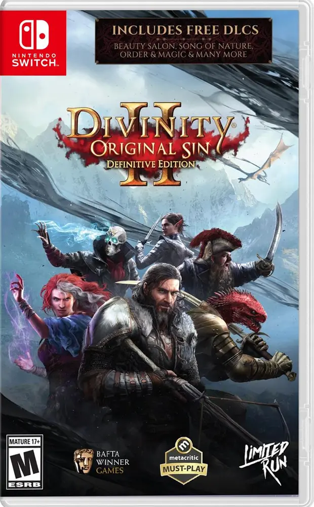
Nintendo Switch
Divinity: Original Sin II · Definitive Edition
9.3The clearest missing Switch grail. Collectors repeatedly identify it as difficult to find, and completed transactions confirm a substantial premium. Compare sold prices and distinguish the Limited Run and Best Buy covers before purchasing.
Review sold-market evidence ↗
Buy at retail or on sale
Buy near retail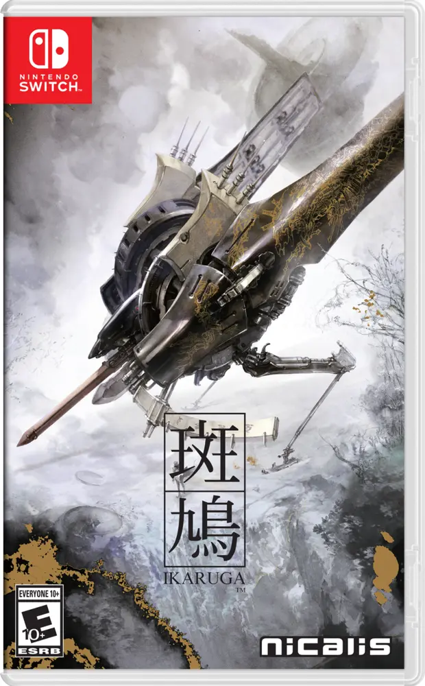
Nintendo Switch
Ikaruga
8.8A genre-defining shooter with an official physical edition still available from Nicalis.
Nicalis ↗
Buy near retail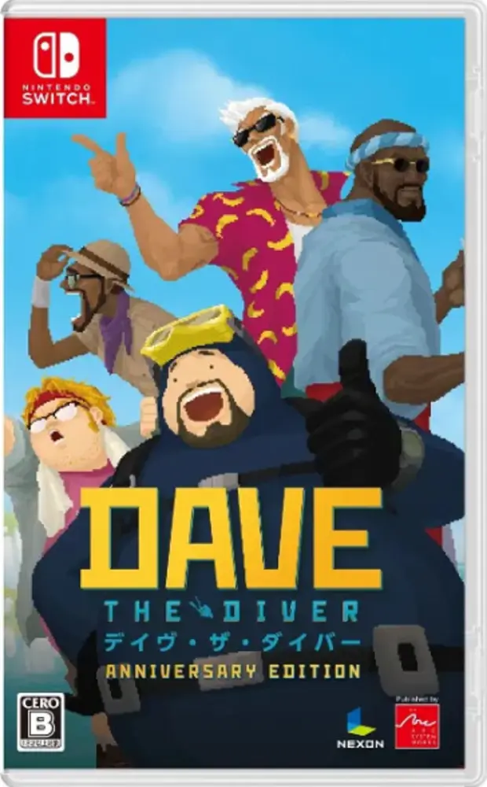
Nintendo Switch · JP English
Dave the Diver Anniversary Edition
9.0An acclaimed modern indie with a Japanese multi-language cartridge that explicitly supports English.
PNP Games ↗
Buy on sale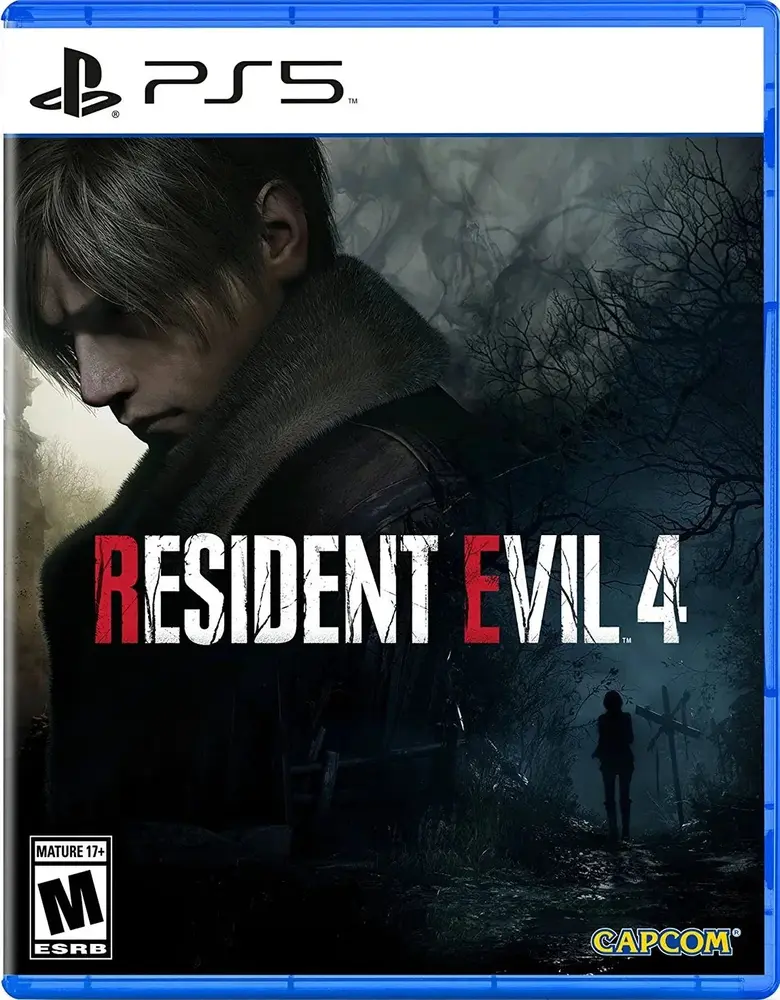
PlayStation 5
Resident Evil 4
9.2A critical landmark and physical essential. It is not presently scarce, so there is no reason to pay above retail.
Review evidence ↗
Buy on sale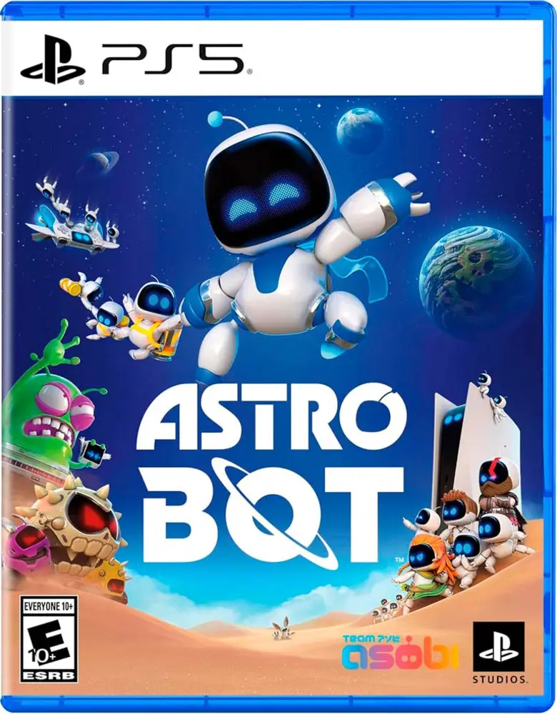
PlayStation 5
Astro Bot
9.4A major first-party critical success with durable PlayStation identity. Collectible because the game matters, not because supply is low today.
Buy near retail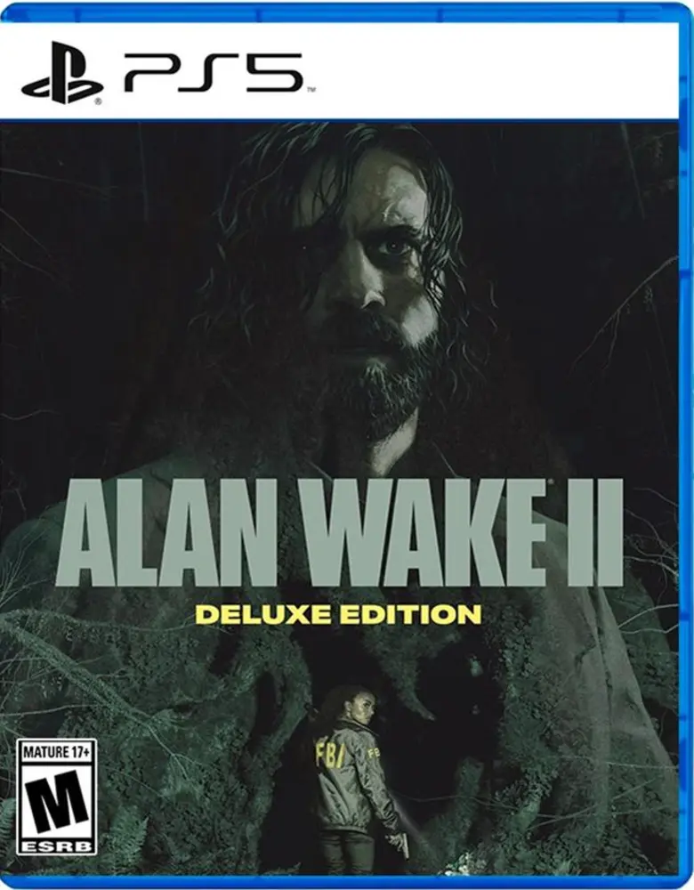
PlayStation 5
Alan Wake 2 Deluxe Edition
8.9Prestige survival horror, a committed Remedy audience, and a physical edition released after the original digital launch.
Full game card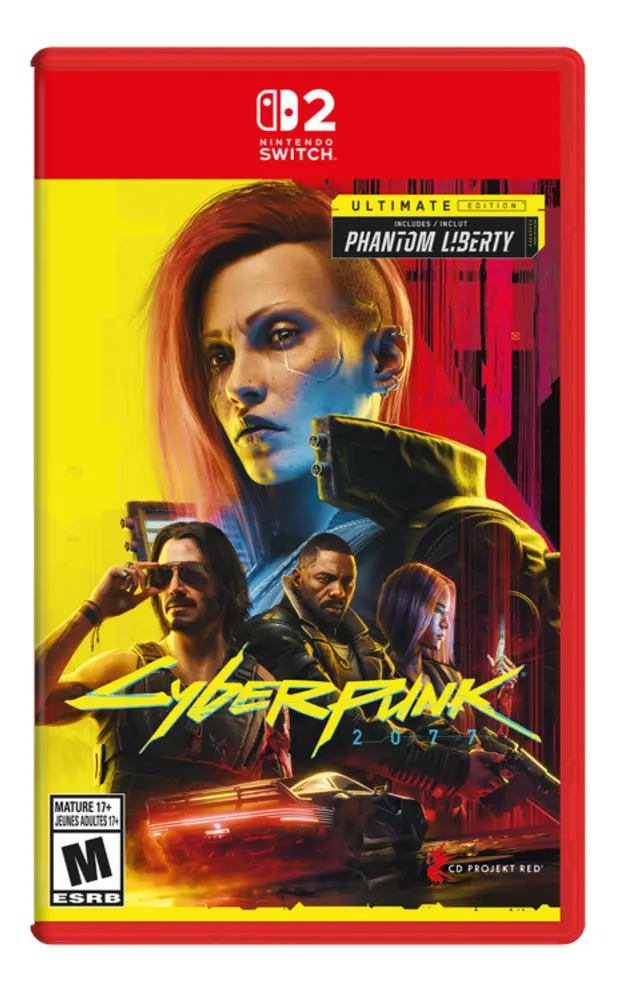
Nintendo Switch 2
Cyberpunk 2077 Ultimate Edition
8.9CD Projekt confirmed that the complete release ships on a 64 GB cartridge rather than a Game-Key Card.
Publisher confirmation ↗
Preorder or monitor
Preorder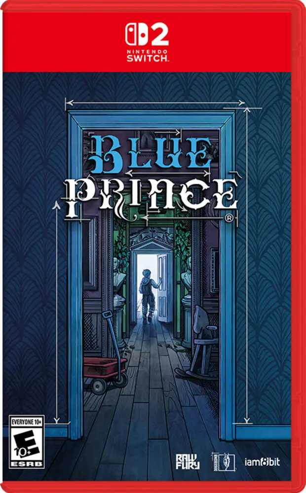
Nintendo Switch 2
Blue Prince
9.2One of 2025’s best-reviewed independent games, paired with an iam8bit physical edition. Buy only at normal preorder pricing.
Video Games Plus ↗
Preorder · Full card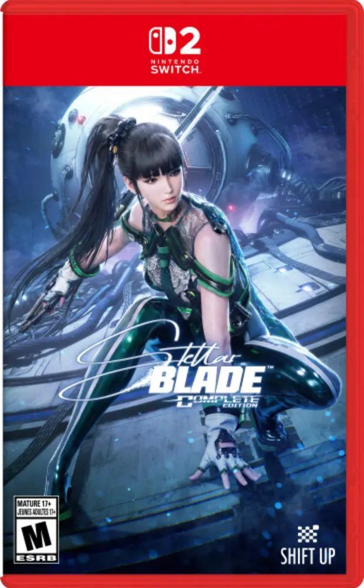
Nintendo Switch 2
Stellar Blade Complete Edition
8.1A quality-rule exception because Shift Up committed to placing the game, updates, and DLC on the cartridge. Choose the standard edition rather than chasing the sold-out steelbook.
PNP Games ↗
Monitor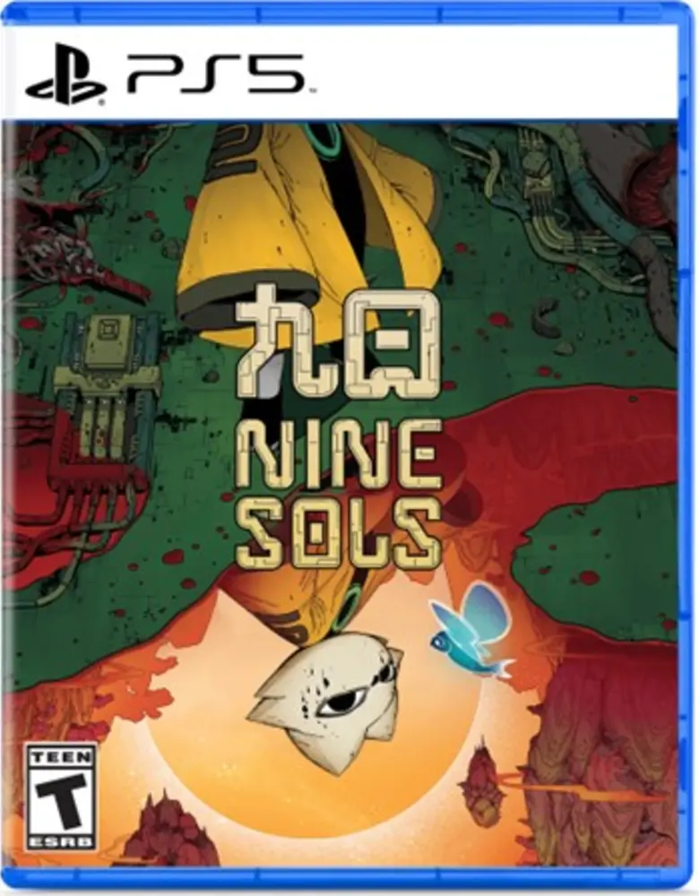
PlayStation 5
Nine Sols
8.6A strong modern cult candidate with a collector-focused Fangamer physical program. Prefer the standard edition unless the extras matter personally.
Fangamer ↗
Secondary market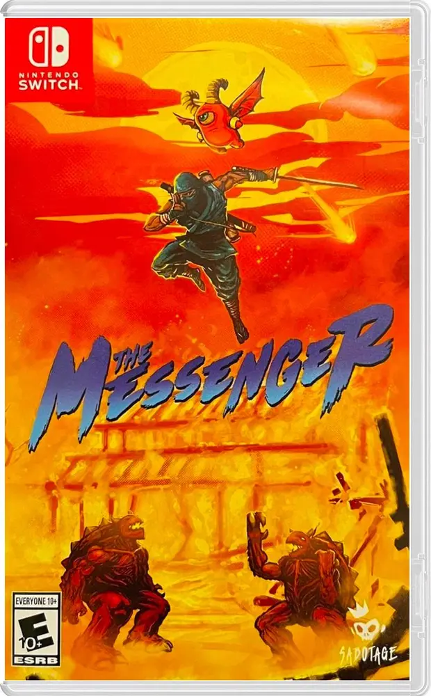
Nintendo Switch
The Messenger
8.6A top-four-percent OpenCritic title with finite specialist physical editions and lasting retro-action appeal.
Review evidence ↗
Strong preorder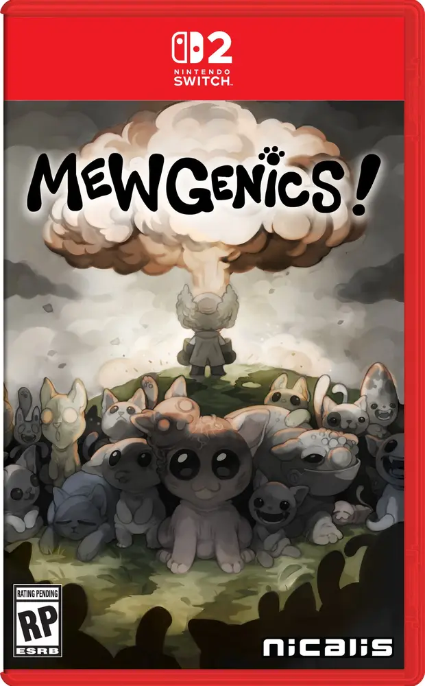
Nintendo Switch 2
Mewgenics
8.9A top-two-percent OpenCritic release with exceptional systemic depth, a large active community, and a new Nicalis physical edition.
Video Games Plus ↗
Strong preorder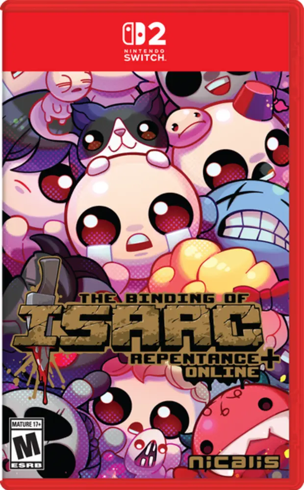
Nintendo Switch 2
The Binding of Isaac: Repentance+
8.9A definitive physical version of an established cult roguelike. Nicalis states that the entire game, DLC, updates, and online co-op are included.
Nicalis ↗
The speculation filter
Influencers, collector forums, and speculation videos are useful early-warning signals. They do not prove lasting value. A title enters the watchlist only when the chatter aligns with independent reviews, physical-release facts, persistent collector demand, or completed sales.
On Switch 2, the most credible developing premium is preservation: a complete cartridge is structurally stronger than a Game-Key Card that requires a remote download. That does not guarantee future profit.
Not added—and why
A Short Hike
A genuine 6,000-copy cult release, but the prominent physical edition is European/PEGI and falls outside this watchlist’s North American/Japanese-English rule.
Baldur’s Gate 3 Deluxe Edition
An unquestioned critical landmark, but the commonly available physical presentation is European rather than a qualifying North American or Japanese-English edition.
TowerFall Collector’s Edition
Scarce, but its overall quality and present collector case are weaker than the final additions.
Game-Key Card hype
A box and download license are not treated as equivalent to a complete cartridge for long-term physical preservation.
Collector research, not financial advice. Buy games primarily because they are worth playing and owning. Stock, prices, review aggregates, and reprint status can change.